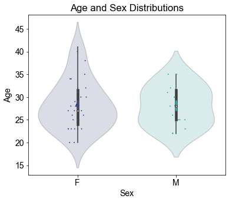
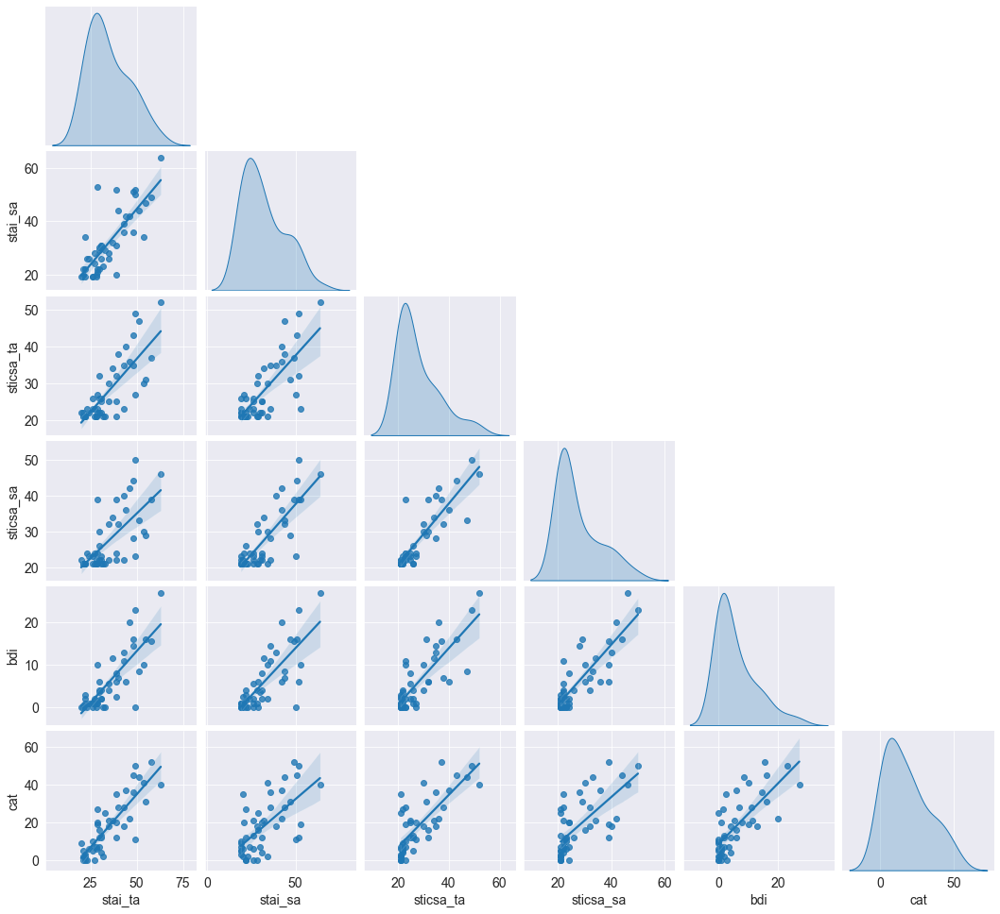
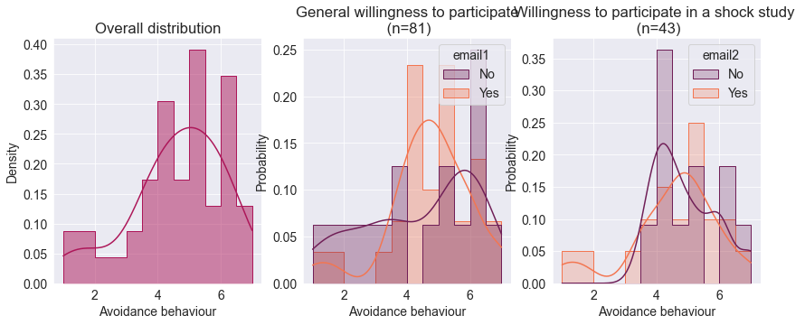
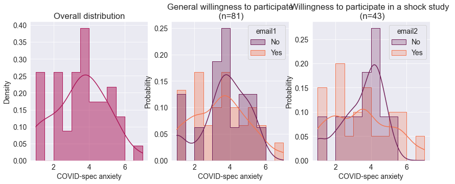
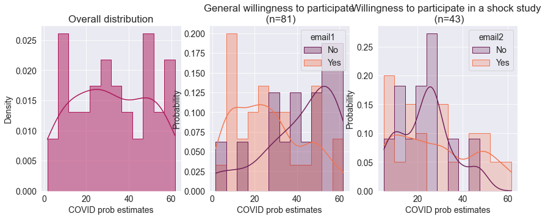
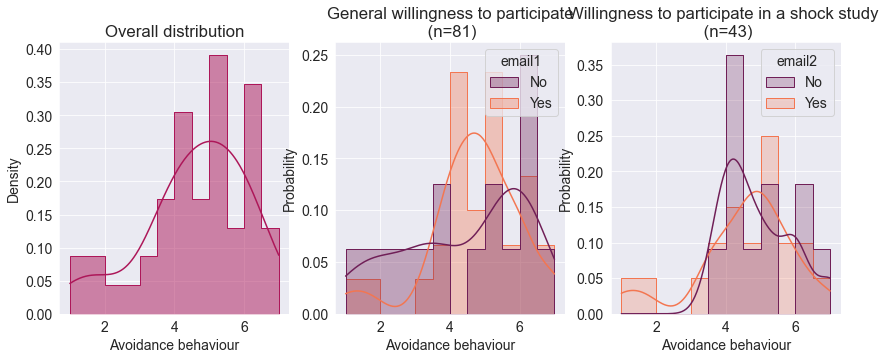
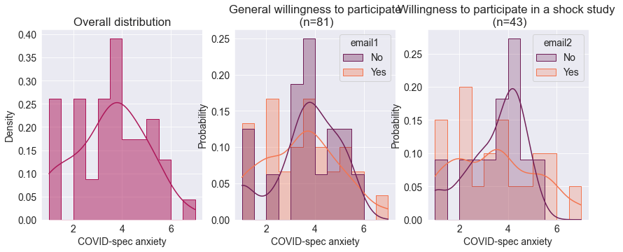
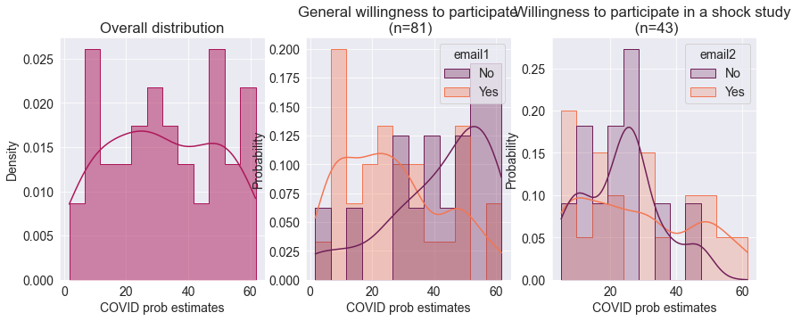

Table of Contents
Lab Experiment Demographics¶
From the on-line sample of 81 Berlin participants we sent two emails:
Email with general inquiry, listing how long the session will be (2 hrs) and how much will they be paid (25-31 eur)
If they successfully answered to the first one another email was sent with details of the study (electrical shocks)
import pandas as pd
import ptitprince as pt
import os
import numpy as np
import seaborn as sns
import matplotlib.pyplot as plt
import scipy as sp
---------------------------------------------------------------------------
ModuleNotFoundError Traceback (most recent call last)
<ipython-input-1-62b0bcda2b22> in <module>
----> 1 import pandas as pd
2 import ptitprince as pt
3 import os
4 import numpy as np
5 import seaborn as sns
ModuleNotFoundError: No module named 'pandas'
from scipy import stats
%matplotlib inline
import matplotlib as mpl
mpl.rcParams['patch.force_edgecolor'] = True
os.chdir("../../")
# Checks current directory
cwd = os.getcwd()
print("Current working directory is:", cwd)
Current working directory is: C:\Users\katya\MPI
## Load email response data
em_data = pd.read_csv('data/email_response_data.csv')
em_data = em_data.set_index('subID', drop=False)
## Load status and the date of participation
status = pd.read_csv('data/task_data/visit1/status_date.csv')
status = status.set_index('subID')
em_data = em_data.join(status)
## Load lab ID and prolific ID link db
link_db = pd.read_csv('data/berlin_lab_participants.csv')
link_db = link_db.loc[:,link_db.columns.intersection(['ID', 'subID'])]
link_db = link_db.set_index('subID')
## Load pooled anxiety data
an_data = pd.read_csv('output/questionnaires/pooled_anxiety.csv')
an_data.index = an_data.pid
## Load covid-related responses from session 12
s12_data = pd.read_csv('data/session15/clean_dataset_reduced.csv')
s12_data.index = s12_data.PROLIFICID
s12_data = s12_data.loc[s12_data.GROUP=='BE',:]
#### merge data to one data set
data = em_data.join(link_db).set_index('ID',drop=False)
data = data.join(an_data).join(s12_data)
## adjust data
data.email2= data.email2.replace({8:0})
data.email2= data.email2.replace({0:"No", 1: "Yes"})
data.email1= data.email1.replace({2:0})
data.email1= data.email1.replace({0: "No", 1: "Yes"})
data.to_csv('output/selection_bias_data.csv')
data.info()
<class 'pandas.core.frame.DataFrame'>
Index: 81 entries, 5e99fbca965d4307124a67a5 to 5ea9bb87b6145a0edc839cc2
Data columns (total 36 columns):
# Column Non-Null Count Dtype
--- ------ -------------- -----
0 subID 81 non-null object
1 email1 81 non-null object
2 email1_date 44 non-null object
3 email2 44 non-null object
4 email2_date 29 non-null object
5 status 81 non-null object
6 participation_date 51 non-null object
7 ID 81 non-null object
8 Unnamed: 0 81 non-null object
9 ta_s1 81 non-null int64
10 ta_s8 79 non-null float64
11 ta_overall 81 non-null float64
12 stta_s1 81 non-null int64
13 stta_s8 79 non-null float64
14 stta_overall 81 non-null float64
15 pid 81 non-null object
16 PROLIFICID 46 non-null object
17 GROUP 46 non-null object
18 sr_age 46 non-null float64
19 sr_gender 46 non-null object
20 q6_me_inf 46 non-null float64
21 q6_close_person_inf 46 non-null float64
22 q6_close_person_died 46 non-null float64
23 q6_media_valence 46 non-null float64
24 covid_worry 46 non-null float64
25 covid_avoidance_beh 46 non-null float64
26 covid_spec_anxiety 46 non-null float64
27 covid_prob_estimates 46 non-null float64
28 covid_end_est 46 non-null float64
29 stai_ta 46 non-null float64
30 stai_sa 46 non-null float64
31 sticsa_ta 46 non-null float64
32 sticsa_sa 46 non-null float64
33 bdi 46 non-null float64
34 cat 46 non-null float64
35 PROLIFICID.1 46 non-null object
dtypes: float64(20), int64(2), object(14)
memory usage: 25.5+ KB
Age and Gender¶
mpl.rcParams['figure.figsize'] = 6,5
mpl.rcParams['font.size'] = 14
sns.violinplot(x = 'sr_gender', y = 'sr_age', data = data, palette = 'mako')
sns.set_style("darkgrid")
g = sns.stripplot(x = 'sr_gender', y = 'sr_age', data = data, palette = 'mako', size = 2, jitter = True )
ax=sns.pointplot(x='sr_gender', y="sr_age", data=data, dodge=.532, join=False, palette='mako', markers="d", scale=.75, ci=68, alpha = [0.1, 0.3]);
for violin, alpha in zip(ax.collections[::2], [0.2,0.2]):
violin.set_alpha(alpha)
# replace labels
plt.ylabel("Age");
plt.xlabel("Sex");
# set title
ttl = ax.set_title("Age and Sex Distributions", fontsize = "large")
ttl.set_position([.5, 1.05])

STAI trait/state distributions and correlation¶
Overall distribution¶
ivs = ["stai_ta", "stai_sa", "sticsa_ta", "sticsa_sa", "bdi", "cat"];
#ivs = ['ta_overall']
labels = ['STAI trait anxiety', 'STAI state anxiety', 'STICSA trait anxiety', 'STICSA state anxiety', 'BDI', 'Catastophizing']
for (v,l) in zip(ivs, labels):
print(l)
fig, axs = plt.subplots(ncols=1, figsize=(10,5))
sns.histplot(data=data, x=v, bins=12, stat='density', kde=True, element="step",
color=sns.color_palette("rocket")[2])
axs.set_xlabel(l)
STAI trait anxiety
STAI state anxiety
STICSA trait anxiety
STICSA state anxiety
BDI
Catastophizing
Cross correlations and distributions¶
sdf = data.loc[:,["stai_ta", "stai_sa", "sticsa_ta", "sticsa_sa", "bdi", "cat"]]
g = sns.pairplot(sdf, corner=True, diag_kind="kde", kind="reg")
plt.subplots_adjust(top=0.9)

Cross Correlations¶
df = data.loc[:,["stai_ta", "stai_sa", "sticsa_ta", "sticsa_sa", "bdi", "cat"]]
from scipy.stats import pearsonr
rho = df.corr()
pval = df.corr(method=lambda x, y: pearsonr(x, y)[1]) - np.eye(*rho.shape)
p = pval.applymap(lambda x: ''.join(['*' for t in [0.01,0.05,0.1] if x<=t]))
rho.round(2).astype(str) + p
| stai_ta | stai_sa | sticsa_ta | sticsa_sa | bdi | cat | |
|---|---|---|---|---|---|---|
| stai_ta | 1.0*** | 0.79*** | 0.79*** | 0.69*** | 0.81*** | 0.85*** |
| stai_sa | 0.79*** | 1.0*** | 0.76*** | 0.82*** | 0.78*** | 0.64*** |
| sticsa_ta | 0.79*** | 0.76*** | 1.0*** | 0.87*** | 0.81*** | 0.77*** |
| sticsa_sa | 0.69*** | 0.82*** | 0.87*** | 1.0*** | 0.85*** | 0.68*** |
| bdi | 0.81*** | 0.78*** | 0.81*** | 0.85*** | 1.0*** | 0.74*** |
| cat | 0.85*** | 0.64*** | 0.77*** | 0.68*** | 0.74*** | 1.0*** |
mpl.rcParams['figure.figsize'] = 14,5
mpl.rcParams['font.size'] = 14
sns.heatmap(rho, cmap = 'coolwarm', linecolor = 'black', linewidth = 1, annot = True)
<AxesSubplot:>
Summary Table¶
import xlsxwriter
dec = 3 #number of decimal points
header = pd.MultiIndex.from_product([['Male','Female'],
['M', '%', 'SD']])
summary = pd.DataFrame([['',str(round((data['sr_gender'][data['sr_gender'] == 'M'].count() / data['sr_gender'].count()) * 100,2)) + ' %','','',str(round((data['sr_gender'][data['sr_gender'] == 'F'].count() / data['sr_gender'].count()) * 100,2)) + ' %',''],
[round(data['sr_age'][data['sr_gender'] == 'M'].mean(),2),'',round(data['sr_age'][data['sr_gender'] == 'M'].std(),2),round(data['sr_age'][data['sr_gender'] == 'F'].mean(),2),'',round(data['sr_age'][data['sr_gender'] == 'F'].std(),2)],
[round(data['stai_ta'][data['sr_gender'] == 'M'].mean(),2),'',round(data['stai_ta'][data['sr_gender'] == 'M'].std(),2),round(data['stai_ta'][data['sr_gender'] == 'F'].mean(),2),'',round(data['stai_ta'][data['sr_gender'] == 'F'].std(),2)],
[round(data['stai_sa'][data['sr_gender'] == 'M'].mean(),2),'',round(data['stai_sa'][data['sr_gender'] == 'M'].std(),2),round(data['stai_sa'][data['sr_gender'] == 'F'].mean(),2),'',round(data['stai_sa'][data['sr_gender'] == 'F'].std(),2)],
[round(data['sticsa_ta'][data['sr_gender'] == 'M'].mean(),2),'',round(data['sticsa_ta'][data['sr_gender'] == 'M'].std(),2),round(data['sticsa_ta'][data['sr_gender'] == 'F'].mean(),2),'',round(data['sticsa_ta'][data['sr_gender'] == 'F'].std(),2)],
[round(data['sticsa_sa'][data['sr_gender'] == 'M'].mean(),2),'',round(data['sticsa_sa'][data['sr_gender'] == 'M'].std(),2),round(data['sticsa_sa'][data['sr_gender'] == 'F'].mean(),2),'',round(data['sticsa_sa'][data['sr_gender'] == 'F'].std(),2)],
[round(data['bdi'][data['sr_gender'] == 'M'].mean(),2),'',round(data['bdi'][data['sr_gender'] == 'M'].std(),2),round(data['bdi'][data['sr_gender'] == 'F'].mean(),2),'',round(data['bdi'][data['sr_gender'] == 'F'].std(),2)],
[round(data['cat'][data['sr_gender'] == 'M'].mean(),2),'',round(data['cat'][data['sr_gender'] == 'M'].std(),2),round(data['cat'][data['sr_gender'] == 'F'].mean(),2),'',round(data['cat'][data['sr_gender'] == 'F'].std(),2)]],
index=['Gender', 'Age', 'Trait Anxiety (STAIT)', 'State Anxiety (STAIS)', 'Trait Cognitive and Somatic Anxiety (STICSAT)', 'State Cognitive and Somatic Anxiety (STICSAS)', 'Beck Depression Inventory (BDI)', 'Catastrophizing'],
columns=header)
header1 = pd.MultiIndex.from_product([[''],
['P']])
df1 = pd.DataFrame([[''],
[round(stats.ttest_ind(data['sr_age'][data['sr_gender'] == 'F'], data['sr_age'][data['sr_gender'] == 'M'])[1], dec)],
[round(stats.ttest_ind(data['stai_ta'][data['sr_gender'] == 'F'], data['stai_ta'][data['sr_gender'] == 'M'])[1], dec)],
[round(stats.ttest_ind(data['stai_sa'][data['sr_gender'] == 'F'], data['stai_sa'][data['sr_gender'] == 'M'])[1], dec)],
[round(stats.ttest_ind(data['sticsa_ta'][data['sr_gender'] == 'F'], data['sticsa_ta'][data['sr_gender'] == 'M'])[1], dec)],
[round(stats.ttest_ind(data['sticsa_sa'][data['sr_gender'] == 'F'], data['sticsa_sa'][data['sr_gender'] == 'M'])[1], dec)],
[round(stats.ttest_ind(data['bdi'][data['sr_gender'] == 'F'], data['bdi'][data['sr_gender'] == 'M'])[1], dec)],
[round(stats.ttest_ind(data['cat'][data['sr_gender'] == 'F'], data['cat'][data['sr_gender'] == 'M'])[1], dec)]],
index=['Gender', 'Age', 'Trait Anxiety (STAIT)', 'State Anxiety (STAIS)', 'Trait Cognitive and Somatic Anxiety (STICSAT)', 'State Cognitive and Somatic Anxiety (STICSAS)', 'Beck Depression Inventory (BDI)', 'Catastrophizing'], columns=header1)
visit1_lab_demographics = summary.join(df1)
visit1_lab_demographics.to_excel('output/visit1_lab_demographics.xlsx')
visit1_lab_demographics
| Male | Female | ||||||
|---|---|---|---|---|---|---|---|
| M | % | SD | M | % | SD | P | |
| Gender | 32.61 % | 67.39 % | |||||
| Age | 28.07 | 4.43 | 28.26 | 5.47 | 0.907 | ||
| Trait Anxiety (STAIT) | 29.00 | 9.44 | 37.84 | 11.02 | 0.011 | ||
| State Anxiety (STAIS) | 25.93 | 9.57 | 34.94 | 11.91 | 0.014 | ||
| Trait Cognitive and Somatic Anxiety (STICSAT) | 25.60 | 8.28 | 29.10 | 8.19 | 0.183 | ||
| State Cognitive and Somatic Anxiety (STICSAS) | 24.93 | 6.57 | 28.71 | 8.62 | 0.142 | ||
| Beck Depression Inventory (BDI) | 2.80 | 4.31 | 7.40 | 7.28 | 0.029 | ||
| Catastrophizing | 12.87 | 14.45 | 20.52 | 14.61 | 0.102 | ||
Response distributions¶
histograms/density plots are normalized per category
(sns.color_palette("rocket"))
ivs = ['ta_overall', 'stta_overall', 'sr_age',
'q6_media_valence', 'covid_worry', 'covid_avoidance_beh',
'covid_spec_anxiety', 'covid_prob_estimates'];
#ivs = ['ta_overall']
labels = ['STAI trait anxiety', 'STICSA trait', 'Age',
'Media valence', 'COVID worry', 'Avoidance behaviour',
'COVID-spec anxiety', 'COVID prob estimates']
em2 = data.email1.value_counts()[0]
for (v,l) in zip(ivs, labels):
print(l)
fig, axs = plt.subplots(ncols=3, figsize=(14,5))
sns.histplot(data=data, x=v, bins=12, ax=axs[0], stat='density', kde=True, element="step",
color=sns.color_palette("rocket")[2])
axs[0].set_title('Overall distribution')
axs[0].set_xlabel(l)
sns.histplot(data=data, x=v, bins=12, hue='email1', ax=axs[1], stat='probability', kde=True,
kde_kws=dict(bw_method='scott', bw_adjust=0.7),
alpha=0.35, element="step",
palette=list( sns.color_palette("rocket")[i] for i in [1,4] ), common_norm=False)
axs[1].set_title('General willingness to participate\n (n=81)')
axs[1].set_xlabel(l)
sns.histplot(data=data, x=v, bins=12, hue='email2', ax=axs[2], stat='probability', kde=True,
kde_kws=dict(bw_method='scott', bw_adjust=0.6), element="step",
palette=list( sns.color_palette("rocket")[i] for i in [1,4] ), common_norm=False)
axs[2].set_title('Willingness to participate in a shock study \n (n='+str(em2)+')')
axs[2].set_xlabel(l)
#sns.regplot(x='value', y='wage', data=df_melt, ax=axs[1])
#sns.boxplot(x='education',y='wage', data=df_melt, ax=axs[2])
STAI trait anxiety
STICSA trait
Age
Media valence
COVID worry
Avoidance behaviour
COVID-spec anxiety
COVID prob estimates
 





#ivs = ['ta_overall']
#labels= ['trait anxiety']
cmap = sns.color_palette("magma", as_cmap=True)
for (v,l) in zip(ivs, labels):
fig, axs = plt.subplots(ncols=2, figsize=(14,5))
td=data.loc[:,data.columns.intersection(["email1", v])].dropna()
t,p = sp.stats.ranksums(td[v].loc[td.email1=="No"], td[v].loc[td.email1=="Yes"]);
print(p)
ax = pt.RainCloud(x = 'email1', y = v,
ax=axs[0],
data = data,
width_viol = .8,
width_box = .4,
orient = 'h',
palette=list([cmap(60), cmap(180)] ),
alpha=0.95,
move = .0)
axs[0].set_title('Email 1: Are you willing to take part in an in-lab study?\n (before learning about shocks, n=81)',
fontsize=16)
axs[0].set_xlabel(l, fontsize=16)
axs[0].set_ylabel('')
axs[0].set_yticklabels(['No', 'Yes'], fontsize=16)
########
ax = pt.RainCloud(x = 'email2', y = v,
ax=axs[1],
data = data,
width_viol = .8,
width_box = .4,
orient = 'h',
palette=list([cmap(160), cmap(200)] ),
alpha=0.95,
move = .0)
axs[1].set_title('Email 2: The study involves electrical stimuli, \ndo you still want to take part? (n='+str(em2)+')',
fontsize=16)
#plt.xticks(np.arange(20,80,10))
axs[1].set_xlabel(l, fontsize=16)
axs[1].set_ylabel('')
axs[1].set_yticklabels(['No', 'Yes'], fontsize=16)
plt.subplots_adjust(hspace=6)
plt.savefig('output/figures/selection_bias/'+v+'.pdf')
plt.savefig('output/figures/selection_bias/'+v+'.png')
0.12998006207221469
0.09962562419750537
0.07963474708497245
0.6038138770088421
0.29934100790353024
0.764312443116012
0.541082457650242
0.007465338555377086
sns.histplot(data=data, x=v, bins=12, ax=axs[0], stat='density', kde=True, element="step",
color=sns.color_palette("rocket")[2])
axs[0].set_title('Overall distribution')
axs[0].set_xlabel(l)
sns.histplot(data=data, x=v, bins=12, hue='email1', ax=axs[1], stat='probability', kde=True,
kde_kws=dict(bw_method='scott', bw_adjust=0.7),
element="step",
palette=list( sns.color_palette("rocket")[i] for i in [1,4] ), common_norm=False)
<AxesSubplot:title={'center':'Email 2: The study involves electrical stimuli, \ndo you still want to take part? (n=43)'}, xlabel='COVID prob estimates', ylabel='Probability'>